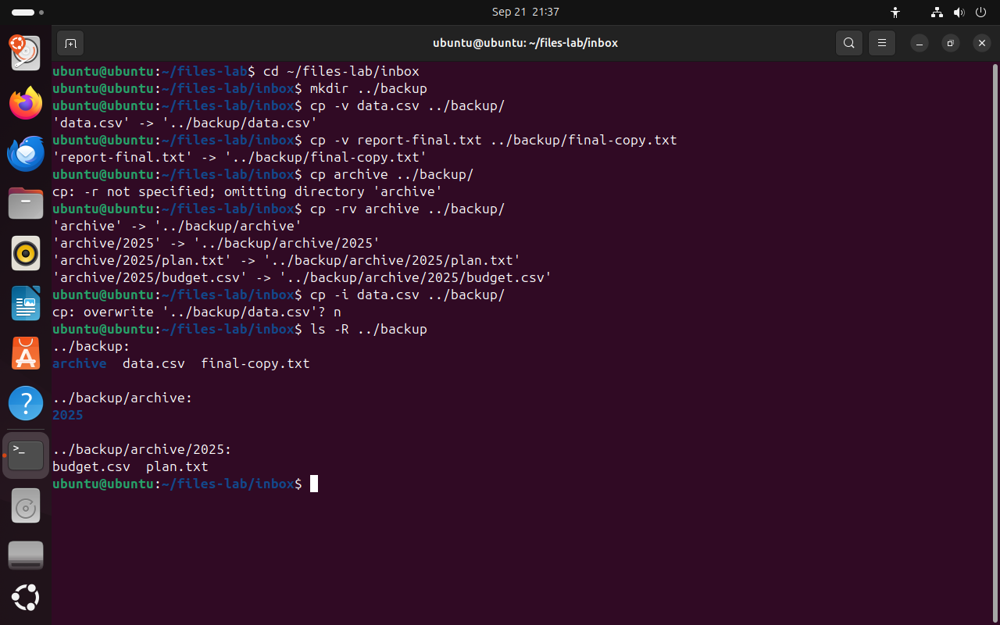
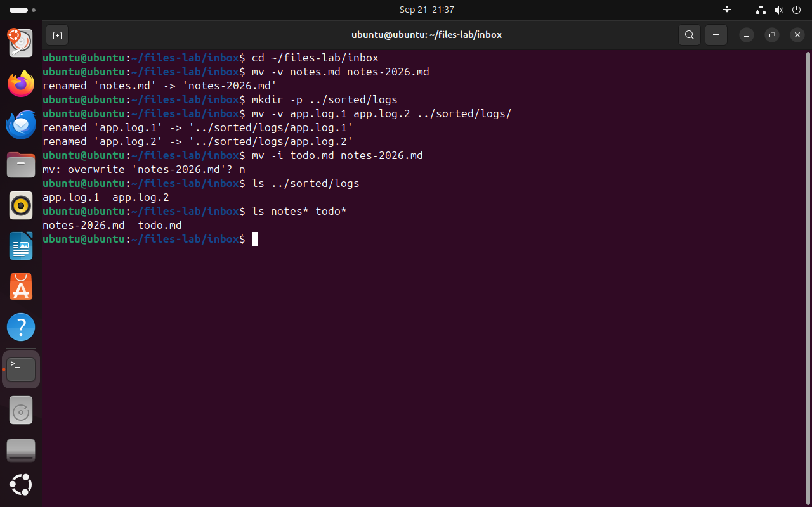
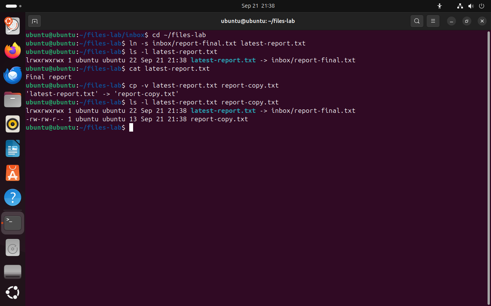

Часть 2 из 7
Копирование, перемещение и ссылки
В этой части скопируем и перенесём файлы из inbox, разберём, в каких случаях команды заменяют файлы без предупреждения, и чем ссылка отличается от копии.
2.1 Копирование: cp
Команда cp (copy — «копировать») создаёт новый файл с тем же содержимым. Первый аргумент — что копировать, последний — куда. Если последний аргумент — существующий каталог, копия получит прежнее имя и окажется в этом каталоге. Если указан путь к файлу, копия получит новое имя: так одной командой копируют и переименовывают.
Каталог cp без ключа не копирует и сообщает -r not specified. Ключ -r (recursive — «рекурсивно») копирует каталог со всеми вложенными каталогами и файлами. Рекурсивно означает, что команда заходит в каждый вложенный каталог и повторяет в нём то же действие, пока не обойдёт всё дерево.
Если в месте назначения уже есть файл с таким же именем, cp заменит его содержимое без вопроса, и отменить замену нельзя. Защищают от этого два ключа: -i (interactive — «с вопросами») спрашивает перед каждой заменой, -n (no-clobber — «не затирать») молча пропускает существующие файлы. Ключ -v (verbose — «подробно») печатает каждую выполненную операцию, по этим строкам удобно проверять результат.
| Команда | Результат |
|---|---|
cp a.txt b.txt | копия под именем b.txt в том же каталоге |
cp a.txt dir/ | копия a.txt в каталоге dir |
cp a.txt dir/b.txt | копия в каталоге dir под именем b.txt |
cp -r src dir/ | каталог src со всем содержимым внутри dir |
cp -i a.txt dir/ | вопрос перед заменой, если в dir уже есть a.txt |
Каталог для копий создадим рядом с inbox. Путь ../backup читается так: подняться на уровень выше (..), то есть в ~/files-lab, и там взять каталог backup. Ключ -R у ls выводит содержимое каталога вместе со всеми вложенными каталогами.
cd ~/files-lab/inboxчто делает
Что делает команда. Переходит в каталог учебного набора inbox.
По частям:
cd- сменить текущий каталог
~/files-lab/inbox- куда перейти (путь от домашнего каталога)
mkdir ../backup# каталог для копий рядом с inboxчто делает
Что делает команда. Создаёт каталог backup уровнем выше, то есть ~/files-lab/backup.
По частям:
mkdir- создать каталог
../backup- какой каталог создать (путь от каталога уровнем выше)
cp -v data.csv ../backup/# копия с прежним именемчто делает
Что делает команда. Копирует data.csv в каталог backup под тем же именем и печатает, что куда скопировано.
По частям:
cp- скопировать файлы
-v- печатать каждую операцию копирования
data.csv- что копировать (путь относительно текущего каталога)
../backup/- куда копировать (путь от каталога уровнем выше; косая черта в конце: это каталог)
cp -v report-final.txt ../backup/final-copy.txt# копия с новым именемчто делает
Что делает команда. Копирует report-final.txt в каталог backup под новым именем final-copy.txt.
По частям:
cp- скопировать файлы
-v- печатать каждую операцию копирования
report-final.txt- что копировать (путь относительно текущего каталога)
../backup/final-copy.txt- куда копировать (путь от каталога уровнем выше)
cp archive ../backup/# каталог без -rчто делает
Что делает команда. Пытается скопировать каталог archive без ключа -r; cp пропускает каталог и сообщает об этом.
По частям:
cp- скопировать файлы
archive- что копировать
../backup/- куда копировать (путь от каталога уровнем выше; косая черта в конце: это каталог)
cp -rv archive ../backup/# каталог со всем содержимымчто делает
Что делает команда. Копирует каталог archive вместе со всеми вложенными каталогами и файлами в backup и печатает каждую операцию.
По частям:
cp- скопировать файлы
-r- копировать каталог со всем содержимым
-v- печатать каждую операцию копирования
archive- что копировать
../backup/- куда копировать (путь от каталога уровнем выше; косая черта в конце: это каталог)
cp -i data.csv ../backup/# data.csv уже есть в backupчто делает
Что делает команда. Копирует data.csv в backup, но сначала спрашивает, можно ли заменить файл, который там уже есть.
По частям:
cp- скопировать файлы
-i- спрашивать перед заменой существующего файла
data.csv- что копировать (путь относительно текущего каталога)
../backup/- куда копировать (путь от каталога уровнем выше; косая черта в конце: это каталог)
n# ответ на вопрос overwrite: не заменятьls -R ../backup# backup со всеми вложенными каталогамичто делает
Что делает команда. Показывает содержимое каталога backup и всех вложенных каталогов по очереди.
По частям:
ls- вывести содержимое каталога
-R- показать и содержимое всех вложенных каталогов
../backup- что показать (путь от каталога уровнем выше)
- 1-v печатает, что и куда скопировано
- 2копия получила новое имя final-copy.txt
- 3без -r каталог не копируется
- 4-r копирует каталог и всё, что в нём
- 5-i спрашивает перед заменой; ответ n оставляет прежний файл
{kind=link}

Весь снимок ↗cp копирует файлы и каталоги, а с ключом -i спрашивает перед заменой.
Что показывает снимок. cp -v печатает каждое копирование; каталог без -r пропущен; cp -i спросил о замене, и после ответа n файл остался прежним.
Где это пригодится. Перед правкой конфигурационного файла делают его копию: cp -v app.conf app.conf.bak. Ключ -i защищает от случайной замены файла с тем же именем.
2.2 Перемещение и переименование: mv
Команда mv (move — «переместить») переносит файл в другое место. Переименование в Linux тоже выполняется переносом: файл остаётся в том же каталоге, но под новым именем. Отдельной команды для переименования в стандартном наборе нет.
Внутри одной файловой системы mv не копирует данные файла. Меняется только запись в каталоге — пара «имя — номер inode», которую мы разбирали на прошлом занятии. Поэтому перенос файла размером в несколько гигабайт выполняется сразу. Если каталог назначения находится на другой файловой системе, например на флешке, mv копирует данные и затем удаляет исходный файл.
Как и cp, команда mv без вопроса заменяет существующий файл с тем же именем. При переименовании это особенно заметно: mv todo.md notes-2026.md удалит прежнее содержимое notes-2026.md, и в каталоге останется один файл вместо двух. Ключ -i работает так же, как у cp.
Если последний аргумент — каталог, перед ним можно перечислить несколько файлов: все они будут перенесены в этот каталог одной командой.
cd ~/files-lab/inboxчто делает
Что делает команда. Переходит в каталог учебного набора inbox.
По частям:
cd- сменить текущий каталог
~/files-lab/inbox- куда перейти (путь от домашнего каталога)
mv -v notes.md notes-2026.md# новое имя в том же каталогечто делает
Что делает команда. Переименовывает notes.md в notes-2026.md в том же каталоге и печатает сообщение renamed.
По частям:
mv- перенести или переименовать
-v- печатать каждый перенос
notes.md- что перенести (путь относительно текущего каталога)
notes-2026.md- куда или под каким именем (путь относительно текущего каталога)
mkdir -p ../sorted/logsчто делает
Что делает команда. Создаёт каталоги sorted и sorted/logs уровнем выше; если они уже есть, ошибки нет.
По частям:
mkdir- создать каталог
-p- создать и все промежуточные каталоги; не выдавать ошибку, если каталог уже есть
../sorted/logs- какой каталог создать (путь от каталога уровнем выше)
mv -v app.log.1 app.log.2 ../sorted/logs/# два файла в другой каталогчто делает
Что делает команда. Переносит два файла журнала в каталог ../sorted/logs.
По частям:
mv- перенести или переименовать
-v- печатать каждый перенос
app.log.1- что перенести (путь относительно текущего каталога)
app.log.2- куда или под каким именем (путь относительно текущего каталога)
../sorted/logs/- куда или под каким именем (путь от каталога уровнем выше; косая черта в конце: это каталог)
mv -i todo.md notes-2026.md# имя notes-2026.md уже заняточто делает
Что делает команда. Переименовывает todo.md в notes-2026.md, но сначала спрашивает, можно ли заменить существующий notes-2026.md.
По частям:
mv- перенести или переименовать
-i- спрашивать перед заменой существующего файла
todo.md- что перенести (путь относительно текущего каталога)
notes-2026.md- куда или под каким именем (путь относительно текущего каталога)
n# не заменять notes-2026.mdls ../sorted/logsчто делает
Что делает команда. Показывает содержимое каталога sorted/logs.
По частям:
ls- вывести содержимое каталога
../sorted/logs- что показать (путь от каталога уровнем выше)
ls notes* todo*# оба файла на местечто делает
Что делает команда. Показывает файлы, имена которых начинаются с notes или с todo.
По частям:
ls- вывести содержимое каталога
notes*- что показать (маска: * — любые символы; оболочка заменит её именами файлов)
todo*- что показать (маска: * — любые символы; оболочка заменит её именами файлов)
- 1mv в том же каталоге меняет имя
- 2каталог в конце: файлы перенесены туда
- 3-i спрашивает, прежде чем заменить файл
- 4после ответа n оба файла на месте
{kind=link}

Весь снимок ↗mv переименовывает и переносит файлы; с ключом -i спрашивает перед заменой.
Что показывает снимок. mv переименовал файл в том же каталоге и перенёс два журнала в другой каталог; на вопрос о замене notes-2026.md дан ответ n.
Где это пригодится. Переименование и сортировка файлов по каталогам — повседневная работа с загрузками, журналами и отчётами. mv -i не даст случайно затереть файл с тем же именем.
2.3 Ссылка вместо копии: ln -s
Иногда один и тот же файл нужен в двух местах. Копия подходит для этого, но у копии своё содержимое: если исправить оригинал, копия останется старой. Символическая ссылка, которую мы разбирали на прошлом занятии, хранит только путь к файлу, поэтому через неё всегда читается текущая версия.
Пример из практики: в каталоге проекта держат ссылку latest-report.txt на последний отчёт. Когда появляется новый отчёт, ссылку перенаправляют на него, и все, кто открывает latest-report.txt, получают новый файл без изменения своих команд.
При копировании ссылки cp переходит по ней и копирует содержимое целевого файла. В результате получается обычный файл. Разница видна в строках ls -l: у ссылки первый символ l, а размер равен длине записанного пути; у копии первый символ -, а размер равен размеру текста.
cd ~/files-labчто делает
Что делает команда. Переходит в каталог занятия files-lab из любого места.
По частям:
cd- сменить текущий каталог
~/files-lab- куда перейти (путь от домашнего каталога)
ln -s inbox/report-final.txt latest-report.txt# ссылка на отчётчто делает
Что делает команда. Создаёт символическую ссылку latest-report.txt, в которой записан путь inbox/report-final.txt.
По частям:
ln- создать ссылку на файл
-s- создать символическую ссылку; без -s создаётся жёсткая
inbox/report-final.txt- на что указывает ссылка (путь относительно текущего каталога)
latest-report.txt- имя новой ссылки (путь относительно текущего каталога)
ls -l latest-report.txtчто делает
Что делает команда. Выводит строку о ссылке: тип l, размер и путь, на который она указывает.
По частям:
ls- вывести содержимое каталога
-l- подробный список: права, владелец, размер, дата
latest-report.txt- что показать (путь относительно текущего каталога)
cat latest-report.txt# чтение через ссылкучто делает
Что делает команда. Выводит содержимое файла, на который указывает ссылка.
По частям:
cat- вывести содержимое файла
latest-report.txt- какой файл вывести (путь относительно текущего каталога)
cp -v latest-report.txt report-copy.txt# копия содержимогочто делает
Что делает команда. Копирует содержимое файла, на который указывает ссылка, в новый обычный файл report-copy.txt.
По частям:
cp- скопировать файлы
-v- печатать каждую операцию копирования
latest-report.txt- что копировать (путь относительно текущего каталога)
report-copy.txt- куда копировать (путь относительно текущего каталога)
ls -l latest-report.txt report-copy.txt# сравнить ссылку и копиючто делает
Что делает команда. Выводит строки о ссылке и о копии рядом, чтобы сравнить тип и размер.
По частям:
ls- вывести содержимое каталога
-l- подробный список: права, владелец, размер, дата
latest-report.txt- что показать (путь относительно текущего каталога)
report-copy.txt- что показать (путь относительно текущего каталога)
- 1тип l — символическая ссылка
- 2в ссылке записан путь к файлу
- 3cat прочитал отчёт через ссылку
- 4ссылка 22 байта — длина пути; копия — обычный файл из 13 байт
{kind=link}

Весь снимок ↗Символическая ссылка хранит путь; cp по ссылке создаёт обычный файл.
Что показывает снимок. Ссылка latest-report.txt имеет тип l и хранит путь; копия, сделанная через ссылку, — обычный файл с текстом отчёта.
Где это пригодится. Ссылки на «текущую» версию файла используют для отчётов, конфигураций и версий программ. Копия нужна, когда файл должен сохраниться неизменным.
Итоги части 2
cpкопирует файлы; для каталога нужен ключ-r.mvпереносит и переименовывает; внутри одной файловой системы данные файла не копируются.cpиmvзаменяют существующий файл без вопроса;-iспрашивает,-nпропускает.- Символическая ссылка хранит путь к файлу;
cpпо ссылке копирует содержимое целевого файла.
В отчётСнимок ls -R ../backup и снимок с вопросом overwrite.